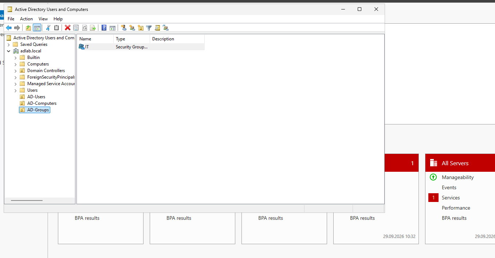
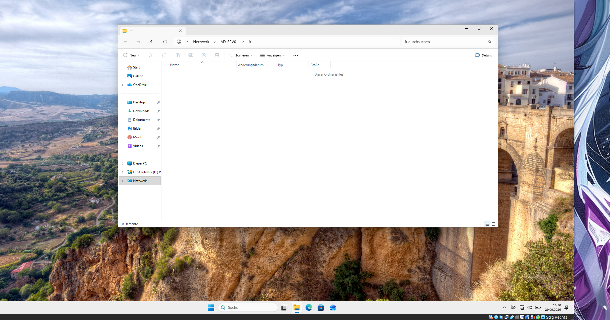
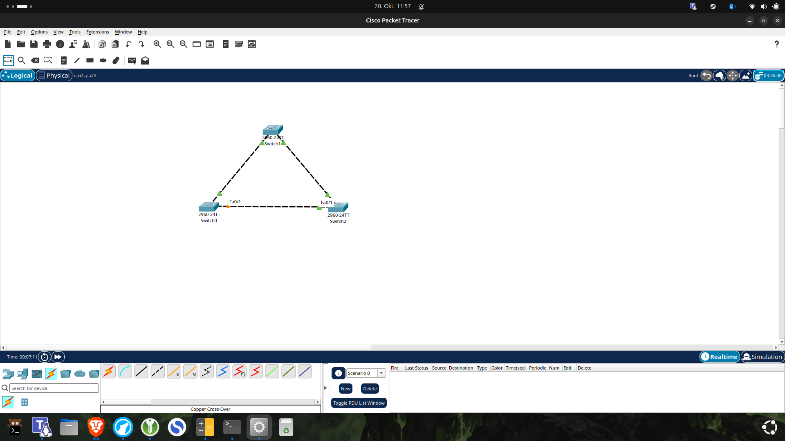
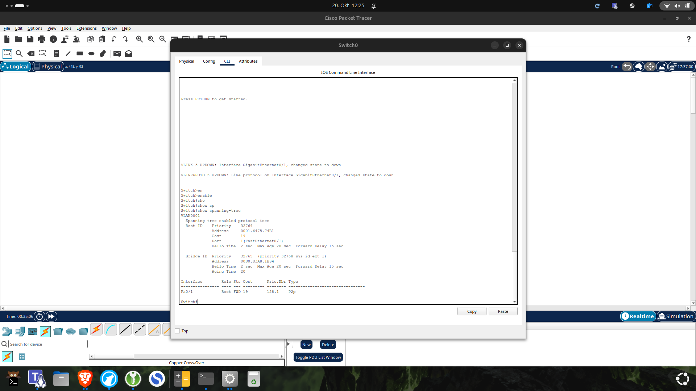

Windows & Linux
Windows Server, AD DS und DNS; Benutzer, Gruppen und Freigaben. Ubuntu-Installation, APT, SSH und systemd.
Hamburg, Deutschland / IT & Menschen
Angehender Fachinformatiker
für Systemintegration
Ich möchte Systeme betreuen, Probleme lösen und Menschen im IT-Alltag helfen. Dafür verbinde ich meine Umschulung mit eigenen Linux-, Windows- und Netzwerklabs.
Mein Ziel ist die Systemadministration. Für mein Pflichtpraktikum freue ich mich auf Aufgaben in der Systemadministration, im IT-Support oder im Helpdesk.
Lernen wir uns kennenÜber mich
Meine Begeisterung für Computer begann schon in meiner Kindheit. Über Spiele wie World of Warcraft entdeckte ich mein Interesse an Hardware und daran, wie Computersysteme und Netzwerke funktionieren. Heute mache ich diese Neugier zum Beruf: Ich absolviere eine Umschulung zum Fachinformatiker für Systemintegration.
In eigenen Projekten vertiefe ich mein Wissen über Windows- und Linux-Systeme, Netzwerke und Virtualisierung. Ich baue Testumgebungen auf, untersuche Fehler und dokumentiere meine Lösungen. Dabei möchte ich verstehen, warum etwas funktioniert und wie ich Probleme systematisch eingrenzen kann.
Aus meinen bisherigen Tätigkeiten im Kundenservice bringe ich Erfahrung im Umgang mit unterschiedlichen Menschen mit. Zuhören, verständlich kommunizieren und auch in anspruchsvollen Situationen freundlich und zuverlässig bleiben – diese Fähigkeiten möchte ich in die IT einbringen.
Mein berufliches Ziel ist die Systemadministration. Für mein Pflichtpraktikum suche ich ein Team, in dem ich mitarbeiten, Verantwortung Schritt für Schritt übernehmen und von erfahrenen Kolleginnen und Kollegen lernen kann. Aufgaben im IT-Support oder Helpdesk sehe ich dabei als wertvollen Einstieg.
02 / Kenntnisse
Praktisch angewendet in eigenen Projekten.
Vertieft in der Umschulung.
Windows Server, AD DS und DNS; Benutzer, Gruppen und Freigaben. Ubuntu-Installation, APT, SSH und systemd.
TCP/IP, Subnetting und Cisco IOS in Packet Tracer. Dokumentierte Labs zu VLANs, 802.1Q-Trunks und STP-Failover.
VirtualBox und QEMU/KVM für virtuelle Umgebungen. Bash und YAML für Installationen; Docker Compose für Datenbankdienste.
Python mit OOP und pytest, SQL mit PostgreSQL. Versionsverwaltung mit Git und nachvollziehbare Dokumentation auf GitHub.
03 / Praktische Arbeit

SYSTEME / WINDOWS SERVER · VIRTUALBOX
Eine eigene Windows-Domäne mit DNS, Windows-11-Clients, Benutzergruppen und einer zentralen Dateifreigabe. Mein Lab für typische Administrationsaufgaben.
AD DS und DNS auf Windows Server eingerichtet, Clients eingebunden sowie OUs, Benutzer und Gruppen angelegt. Eine SMB-Freigabe ergänzt das Lab.
Domänenanmeldung, Gruppenmitgliedschaften und Zugriff von Clients dokumentiert. Ein unerwarteter Zugriff mit einem weiteren Benutzer führte zur Prüfung von Share-, NTFS- und geerbten Rechten.
Eine erreichbare Freigabe allein bestätigt noch kein korrektes Berechtigungskonzept. Entscheidend sind beide Rechteebenen und Tests mit unterschiedlichen Benutzern.
Gruppenrichtlinien, Netzlaufwerke und PowerShell für AD.

Client-Zugriff ansehen ↗
NETZWERKE / PACKET TRACER · CISCO IOS
Dokumentierte Netzwerklabs von LAN und Subnetting bis zu VLANs und STP. Dabei untersuche ich, wie sich Konfiguration und Verbindungsfehler auswirken.
VLANs 10 und 20 mit Access-Ports und einem 802.1Q-Trunk dokumentiert. Im STP-Lab verbinden drei Switches redundante Pfade.
Root Bridge und Portrollen mit show spanning-tree geprüft. Nach Abschalten einer Verbindung den Ersatzpfad und nach Wiederherstellung den bevorzugten Pfad dokumentiert.
Ein blockierter Port ist nicht automatisch defekt. CLI-Ausgaben, Portrollen und Pfadkosten erklären das Verhalten besser als die Farbe einer Verbindung allein.
Die Lab-Sammlung wird schrittweise ausgebaut. CCNA ist ein Lernziel, keine bereits erworbene Zertifizierung.

Failover-Prüfung ansehen ↗PYTHON / OOP · PYTEST · CI
Vom Würfelspiel zum Terminal-RPG: Charaktererstellung, Werte und rundenbasierter Kampf als praktisches Python-Projekt.
Ich trenne Spieler, Rassen, Klassen und Werte in eigene Komponenten. So lassen sich verschiedene Charakterkombinationen abbilden, ohne jede Kombination als eigene Klasse anzulegen.
Charaktererstellung, Stat-System, unterschiedliche Primärattribute und rundenbasierter Kampf mit Python und Dataclasses.
pytest-Tests für Spieler, Rassen, Klassen, Würfel und Gegner. Der GitHub-Actions-Workflow führt sie mit Python 3.12 bei Pushes und Pull Requests aus.
Verantwortlichkeiten in der Spiellogik trennen und Verhalten mit Tests absichern.
Fähigkeiten, kritische Treffer, XP und Level, Inventar und Dungeons.
SYSTEME / UBUNTU · BASH · YAML
Ubuntu manuell einrichten und wiederkehrende Schritte automatisieren: mit einer Autoinstall-Beispielkonfiguration und einem Bash-Postinstallationsskript.
YAML für Installationsparameter und Bash für APT-Updates, Werkzeuge und SSH. Installation, Netzwerk und Partitionierung sind dokumentiert.
Das Skript zeigt Netzwerk-, Speicher- und Arbeitsspeicherinformationen an. Ein automatisierter Installationstest wird im README nicht ausgewiesen.
Manuelle Einrichtung schrittweise in reproduzierbare Abläufe überführen. Die Konfiguration bleibt ein anpassbares Lernbeispiel mit Platzhaltern für sensible Werte.
DATEN / POSTGRESQL · DOCKER COMPOSE
Eine Übungsdatenbank für eine fiktive Bibliothek. PostgreSQL und Adminer laufen in getrennten Containern; SQL-Dateien legen Tabellen und Beispieldaten an.
Relationales Schema für Bücher, Exemplare, Autoren, Mitglieder und Ausleihen. Docker Compose verbindet Adminer intern mit PostgreSQL.
README mit SQL-Beispielabfragen, Containerstatus und Log-Prüfung zur Fehlersuche. Eine automatisierte Testsuite wird dort nicht beschrieben.
Tabellenbeziehungen und Dienstkommunikation verstehen. Die Datenbank hat derzeit kein persistentes Docker-Volume; Änderungen im Container können beim Entfernen verloren gehen.
04 / Lebenslauf
Aus dem Service bringe ich Erfahrung im Umgang mit Menschen und im selbstständigen Arbeiten mit. In der Umschulung baue ich darauf meine fachliche IT-Praxis auf.
12/2025 – 12/2027
Syntax GmbH · Hamburg
Schwerpunkte: IT-Support, Windows-/Linux-Systeme, Netzwerktechnik und Systemadministration. Eigene Labs ergänzen die Lerninhalte.
08/2023 – 07/2025
Airline Assistance Switzerland (AAS) · Hamburg
Check-in, Boarding und Betreuung von Fluggästen. Zusammenarbeit mit Gate- und Servicebereichen.
01/2023 – 07/2023
Fahrgastbeförderung im Hamburger Stadtgebiet mit serviceorientiertem Kundenkontakt.
01/2022 – 12/2022
Auslieferung von Bestellungen mit eigenständiger Organisation und kundenorientiertem Arbeiten.
10/2019 – 12/2021
Zustellung von Sendungen sowie selbstständige und zuverlässige Organisation der täglichen Touren.
09/2007 – 05/2019
Sekundarschule „Lyuben Karavelov“ · Dobrich, Bulgarien
Schwerpunkt: Wirtschaft und Unternehmertum.
05 / Kontakt
Sie suchen Unterstützung im IT-Alltag und bieten Raum zum Lernen? Ich freue mich auf ein Gespräch über mein Pflichtpraktikum und einen Einstieg in die Systemintegration.
Hamburg, Deutschland